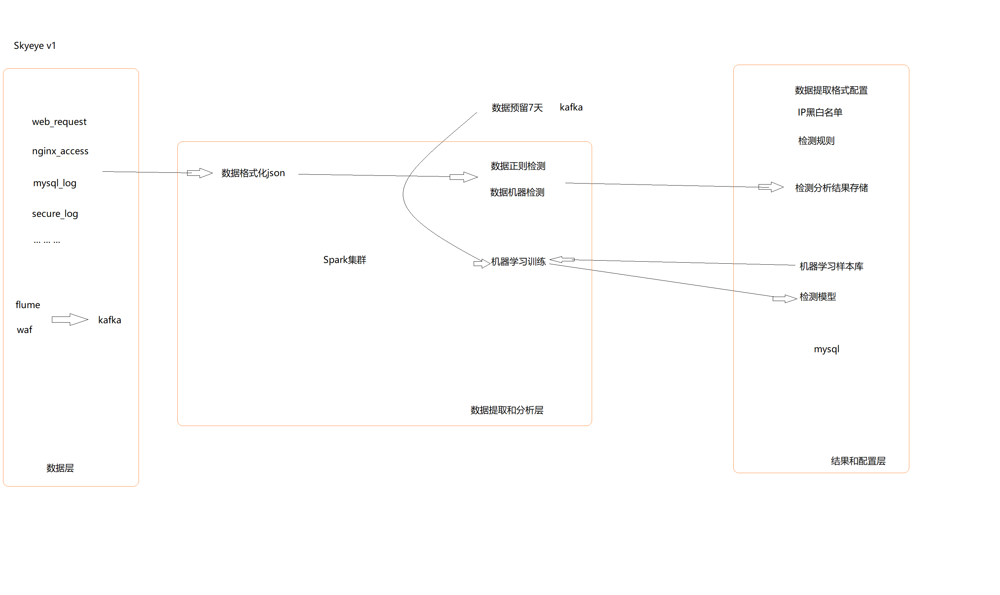

0x01 背景介绍
安全现状
当前互联网企业存在很多业务风险，有些风险（比如薅羊毛）虽然没有sql注入漏洞利用来的直接，但是一直被羊毛党、刷单党光顾的企业长期生存下来的几率会很低！
账号：垃圾注册、撞库、盗号等
交易：盗刷、恶意占用资源、篡改交易金额等
活动：薅羊毛
短信：短信轰炸
web攻击：webshell, 注入, XSS等
隐私保护：密码，地址，手机等
安全大数据产线相关产品，通过对业务系统进行多个维度的日志数据采集，对数据解析、与场景和知识关联计算，以帮助用户对安全事件进行规划预防、实时监视、违规响应、追踪溯源，提取无序数据中的深层价值，消除信息孤岛，定位未知风险，制定防御阈值，协同完成安全能力的自动化安全编排、将安全威胁从应急响应升级为持续响应。
此外，通过高效的大数据处理能力，助力企业用户明确安全基线和风险边界，基于场景构建业务安全模型，秒级发现威胁事件，持续应对安全威胁，提供有价值的决策建议。
数据安全治理核心是围绕数据内容和价值本身进行，通过在数据收集、存储、使用、分发、销毁全生命周期过程中的内容识别、分级分类、策略制定、过程监管、审结稽查，实现数据资产的有效管理和风险规避，并为各行业用户提供专业的安全咨询、风险评估、数据防护以及风险可视化服务。
产品规划
| 时间 | 规划 | 成果 | 备注 |
|---|---|---|---|
| 2018-01.9~02 | v0.1设计阶段: 架构，数据库，API设计; 定义基础的收集数据对象[初步仅采集web数据，进行分析] |
补充说明文档 | ~ |
| 2018-02~03 | v0.1准备阶段: 开发, 测试环境搭建 v0.1开发阶段[包含前端，后端，agent]: 自动WEB日志识别 多类型WEB风险识别 动态规则更新 风险信息警报 风险信息拦截 |
详见：测试的demo地址 | ~ |
| 2019-03~04 | v0.1测试阶段: 接入测试业务 内网环境测试阶段 |
补充说明文档 | ~ |
| 2019-04-05 | v0.1bug修复和优化阶段: 修复测试出现的bug 添加机器学习检测风险功能 |
补充说明文档 | ~ |
| todo | 部署上线 正式版本v1上线 v0.1功能叠加和运营阶段: 系统安全监控 数据库安全监控 加入用户中心安全监控 根据当时安全产品或需求加入监控（蜜网等） 提供各种API支持 隐私功能 接口特征统计 安全产品联动 |
补充说明文档 | ~ |
架构设计

检测数据源格式[json]
整个系统要做的就是：
web日志[waf反响代理记录]: 通过反响代理镜像流量
sql日志
系统日志
web防护,如下：
1 | { |
系统防护，如下:todo
0x02 Spark简介
应用
主机入侵审计
webshell检测
数据库审计
入侵检测数据分析
隐私保护
RASP
身份证OCR
生物特征识别
人脸检测
活体检测
识别引擎
实时运维
优点
Spark最大的特点就是将计算数据、中间结果都存储在内存中，大大减少了IO开销，因而，Spark更适合于迭代运算比较多的数据挖掘与机器学习运算。
a.运行速度快：Spark使用先进的DAG（Directed Acyclic Graph，有向无环图）执行引擎，以支持循环数据流与内存计算，基于内存的执行速度可比Hadoop MapReduce快上百倍，基于磁盘的执行速度也能快十倍；
b.容易使用：Spark支持使用Scala、Java、Python和R语言进行编程，简洁的API设计有助于用户轻松构建并行程序，并且可以通过Spark Shell进行交互式编程；
c.通用性：Spark提供了完整而强大的技术栈，包括SQL查询、流式计算、机器学习和图算法组件，这些组件可以无缝整合在同一个应用中，足以应对复杂的计算；
d.运行模式多样：Spark可运行于独立的集群模式中，或者运行于Hadoop中，也可运行于Amazon EC2等云环境中，并且可以访问HDFS、Cassandra、HBase、Hive等多种数据源。
优点：
高数据处理速度
天然的动态性
Spark中的内存计算
可重用性
容错
实时流处理
懒惰评估
支持多种语言：Java，R，Scala，Python
支持复杂的分析
与Hadoop集成
Spark GraphX 支持图形和图形并行计算
成本效益
缺点
不支持实时处理
小文件问题
没有文件管理系统
成本非常昂贵
算法的数量较少
手动优化
迭代处理
延迟
处理
主要包括以下三个类型：
复杂的批量数据处理：时间跨度通常在数十分钟到数小时之间；
基于历史数据的交互式查询：时间跨度通常在数十秒到数分钟之间；
基于实时数据流的数据处理：时间跨度通常在数百毫秒到数秒之间。
目前已有很多相对成熟的开源软件用于处理以上三种情景，比如，可以利用Hadoop MapReduce来进行批量数据处理，可以用Impala来进行交互式查询（Impala与Hive相似，但底层引擎不同，提供了实时交互式SQL查询），对于流式数据处理可以采用开源流计算框架Storm。
访问和接口
Spark Streaming: Spark Streaming支持高吞吐量、可容错处理的实时流数据处理，其核心思路是将流式计算分解成一系列短小的批处理作业。Spark Streaming支持多种数据输入源，如Kafka、Flume和TCP套接字等；
BlinkDB: 暂不介绍。
Spark SQL: 允许开发人员直接处理RDD，同时也可查询Hive、HBase等外部数据源。Spark SQL的一个重要特点是其能够统一处理关系表和RDD，使得开发人员可以轻松地使用SQL命令进行查询，并进行更复杂的数据分析；
GraphX: Spark中用于图计算的API，可认为是Pregel在Spark上的重写及优化，Graphx性能良好，拥有丰富的功能和运算符，能在海量数据上自如地运行复杂的图算法。
MlBase: 暂不介绍。
vMLlib: 提供常用机器学习算法的实现，包括聚类、分类、回归、协同过滤等，降低了机器学习的门槛，开发人员只要具备一定的理论知识就能进行机器学习的工作；
Spark Core: Spark的基本功能，如内存计算、任务调度、部署模式、故障恢复、存储管理等;Spark建立在统一的抽象RDD之上。
存储：HDFS, S3
资源管理调度：Mesos, Hadoop YARN
运行架构
Application: 基于Spark的用户程序，包含了一个driver program和集群中多个的excutor；
Driver: 运行application的main函数并且创建SparkContent，通常用SparkContext代表Driver Program；
RDD：是弹性分布式数据集（Resilient Distributed Dataset）的简称，是分布式内存的一个抽象概念，提供了一种高度受限的共享内存模型；
DAG：是Directed Acyclic Graph（有向无环图）的简称，反映RDD之间的依赖关系；
Executor：是运行在工作节点（Worker Node）上的一个进程，负责运行任务，并为应用程序存储数据；Spark所采用的Executor有两个优点：一是利用多线程来执行具体的任务（Hadoop MapReduce采用的是进程模型），减少任务的启动开销；二是Executor中有一个BlockManager存储模块，会将内存和磁盘共同作为存储设备，当需要多轮迭代计算时，可以将中间结果存储到这个存储模块里，下次需要时，就可以直接读该存储模块里的数据，而不需要读写到HDFS等文件系统里，因而有效减少了IO开销；或者在交互式查询场景下，预先将表缓存到该存储系统上，从而可以提高读写IO性能。
应用：用户编写的Spark应用程序；一个应用（Application）由一个任务控制节点（Driver）和若干个作业（Job）构成，一个作业由多个阶段（Stage）构成，一个阶段由多个任务（Task）组成。当执行一个应用时，任务控制节点会向集群管理器（Cluster Manager）申请资源，启动Executor，并向Executor发送应用程序代码和文件，然后在Executor上执行任务，运行结束后，执行结果会返回给任务控制节点，或者写到HDFS或者其他数据库中。
任务：运行在Executor上的工作单元；
作业：一个作业包含多个RDD及作用于相应RDD上的各种操作；
阶段：是作业的基本调度单位，一个作业会分为多组任务，每组任务被称为“阶段”，或者也被称为“任务集”。
行业使用场景
金融业：它有助于访问和分析银行部门的许多参数，例如电子邮件，社交媒体档案，通话录音，论坛等等
电子商务行业： 有助于获得有关实时交易的信息。而且，这些被传递给流聚类算法。
媒体和娱乐业：从实时的游戏事件中，识别模式
旅游业：可以帮助用户通过加快个性化建议来规划一次完美的旅程
0x03 机器学习特征
数据维度
恶意数据判断的维度，分类可以根据训练和测试的样本进行分类，生成model
1 | { |
扩展黑白名单，ip，手机号，设备指纹等；从细颗粒到粗颗粒，依次执行1和2，将所有黑白名单遍历
扩展维度信息，比如手机号地域运营商，ip地域运营商，ip出口类型，设备指纹，Referer，ua，密码hash，征信等，维度越多，可以建立规则越多，风控越精准；
扩展风控规则，针对需要解决的场景问题，添加特定规则，分值也应根据自身场景来调整。阈值预警
将用户的行为轨迹综合考虑，建立复合场景的规则条件。比如：登录->活动->订单->支付，将事件关联分析综合考虑；保存事件
减少漏报和误报。当然，这将是个漫长的过程
参数抽取 —用于规则检测
对http请求数据进行拆解，提取如下参数，这部分的难点在于如何正确的识别编码方式并解码：
Ø GET、POST、Cookie请求参数
Ø GET、POST、Cookie参数名本身
Ø 请求的URL路径
Ø http请求头，如Content_type、Content-Length(对应strust2-045)
参数泛化 —用于机器检测/训练
需要将参数值泛化为规律性的观测经验，并取字符的unicode数值作为观察序列，泛化的方法如下：
Ø 大小写英文字母泛化为”A”，对应的unicode数值为65
Ø 数字泛化为”N”，对应的unicode数值为78
Ø 中文或中文字符泛化为“C”，对应的unicode数值为67
Ø 特殊字符和其他字符集的编码不作泛化，直接取unicode数值
Ø 参数值为空的取0
样例
简单抽取定义表，如下:
access_ip, access_time, access_url, access_status, user_agent – weblog
简单告警定义表，如下：
SRC_IP,DST_IP,LEVEL,TYPE,DETAIL
192.168.1,192.168.6,high,php_injection, 恶意信息
192.168.1,192.168.6,middle,xss_injection, 恶意信息
192.168.1,192.168.6,low,sql_injection, 恶意信息
0x04 配置开发环境
下载压缩包
第一步是选择适当版本的压缩包，可以到官网进行下载。
截至到2018年2月，Spark最新版本是2.3.0版本。
然后下载压缩包到自己的目录下就好。
配置环境
下载压缩包的时候，来配置一下环境。
先看看官方文档，里面有句关于环境依赖的说明:
Spark runs on Java 8+, Python 2.7+/3.4+ and R 3.1+. For the Scala API, Spark 2.3.0 uses Scala 2.11. You will need to use a compatible Scala version (2.11.x).
Note that support for Java 7, Python 2.6 and old Hadoop versions before 2.6.5 were removed as of Spark 2.2.0. Support for Scala 2.10 was removed as of 2.3.0.
也就是说，Spark 2.3.0 的其他语言版本要求是： 2.11.x的Scala，Java 8+，Python 2.7+或者3.1+， R 要3.1+。根据自己常用开发语言安装即可。
参考如下：
使用IDEA安装Scala(https://docs.scala-lang.org/getting-started-intellij-track/getting-started-with-scala-in-intellij.html)
使用sbt在命令行安装(https://docs.scala-lang.org/getting-started-sbt-track/getting-started-with-scala-and-sbt-on-the-command-line.html)
设置环境变量
1 | tar xzf spark-2.3.0-bin-hadoop2.7.tgz |
Spark需要两个环境变量： JAVA_HOME 和 SPARK_HOME
在ubuntu下，直接编辑用户目录下的 .bashrc即可：
1 | export JAVA_HOME=<path-to-the-root-of-your-Java-installation> (eg: /usr/lib/jvm/java-7-oracle/) |
检验是否成功
进入到解压目录下，执行
1 | ./bin/spark-shell |
即可进入spark命令行界面。然后也可以打开 http://localhost:4040 ，通过web UI查看任务情况。
配置开发环境
我自己使用的是IDEA， 所以介绍一下IDEA中如何创建Spark项目。
安装IDEA
这一步网上很多教程，可以自己搜一下。
创建项目
在初始页面，点击 Create New Project ，或者在已经打开的项目的左上角点击File -> New -> Project ，可以看到以下画面：
选择 Scala -> SBT ， 然点击 Next。 (SBT 是一个互动式的编译工具，详细了解看到 官网 查看。)
然后给自己的项目取个名字，接着再根据自己Spark版本，选择合适的Java、Scala版本，最后点击 Finish 即可。
配置项目
这一步介绍怎么引入Spark的依赖。
进入项目后，点击左上角 File -> Project Structure.
点击 Libraries ，然后点 绿色的加号。这时出现了三个选项： Java， Maven， Scala SDk。
如果你选择maven方式添加spark，可以参考这里，来获取 对于的maven链接。形如：org.apache.spark:spark-core_2.11:2.3.1 (下载版本2.11为scala版本，2.3.1是spark版本;在运行spark-shell可查看)
当然，如果你已经下载好了Spark的压缩包，并且已经解压了，那就可以用引入Jar包的方式引入Spark，只要选择spark解压目录下名为jars的目录就OK了。
注意添加library时，要添加给两个默认的module。
Hello World
1）创建包
在对应 src/main/scala 目录下，创建自己的包：org.apache.spark.examples。
2 ）创建Scala文件
然后选中这个包下，右键点击 New ，选择 Scala Class。
然后取名为：PiTest， kind记得选为 Object。
代码附上如下：
1 | package org.apache.spark.examples |
配置VM参数
别急着运行，spark在运行的时候，会去读取一个环境变量，叫做“spark.master”。
传递给spark的master url可以有如下几种：
1 | local 本地单线程 |
点击Run -> Edit Configuration，在 VM Options 中添加变量。
或者直接在代码中指定：
1 | val spark = SparkSession |
运行
最后，右键选择 Run PiTest ，然后就可以看到输出了。
部分日志如下：
1 | 18/12/27 17:05:33 INFO DAGScheduler: ResultStage 0 (reduce at PiTest.scala:22) finished in 0.514 s |
参考
http://dblab.xmu.edu.cn/blog/spark/
https://waltyou.github.io/Spark-Install/
https://waltyou.github.io/Spark-Tuning-Practice/
http://wuchong.me/blog/2015/04/04/spark-on-yarn-cluster-deploy/
https://dongkelun.com/2018/05/17/sparkKafka/
https://aiyanbo.gitbooks.io/spark-programming-guide-zh-cn/content/spark-sql/data-sources/parquet-files.html